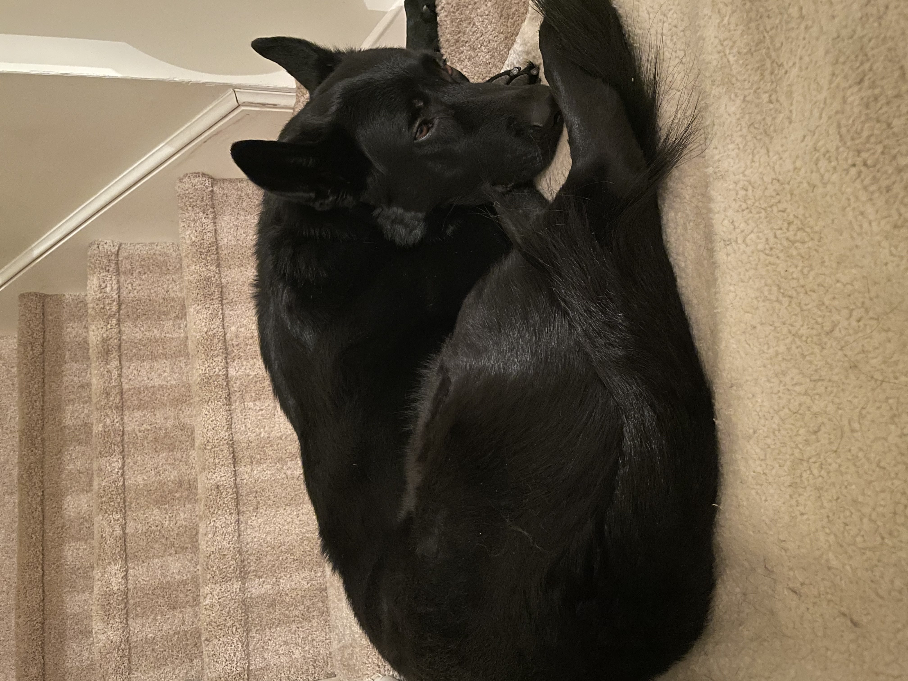
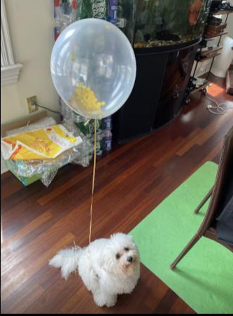
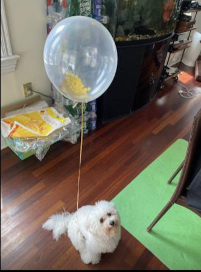

York

York loves to stay active by taking long walks near his house. He also enjoys chewing on his large assortment of toys with his favorite being his squeaky pig. York's favorite food is sausage, but cheese is another favorite.
York is a very sociable dog and is a licensed therapy dog. He frequently visits nursing homes and other places in an attempt to raise peoples' spirits. When it comes to bedtime, York prefers to sleep alone in his favorite blue dog bed. He will always be the first to get up in the morning.
Photo Gallery



Likes
- Food
- Playing
- Toys
Jingle

Jingle loves going outside. He used to be an outdoor/indoor cat until we realized that he loved to get injured. Now, we take him on walks with a leash which he loves! Every time he sees me carrying the leash he goes crazy and meows to go out.
Jingle is very mischievous, he has gotten into many different accidents. His first accident was outside; a bee stung his paw and he cried all night long. The second one was ALSO outside, he got stuck on a tree for four days. Finally, he came back home one day with his tail bleeding and ripped out.
Photo Gallery


Likes
- Going on Walks
- Being Petted
- Eating Treats
Basil

Basil, otherwise known as Slaysil, is a very energetic white, slightly crusty and trusty, dog (bichon). She gets princess treatment in her household but also out in public. As a consequence, she is very clingy and loves to lick, especially in the face.
She endeavors in multiple hobbies and activities, which include flying, licking, standing on two legs, ringing bells, and jumping through hula hoops.
Photo Gallery
 



Likes
- Water Bottles
- Socks
- Cats